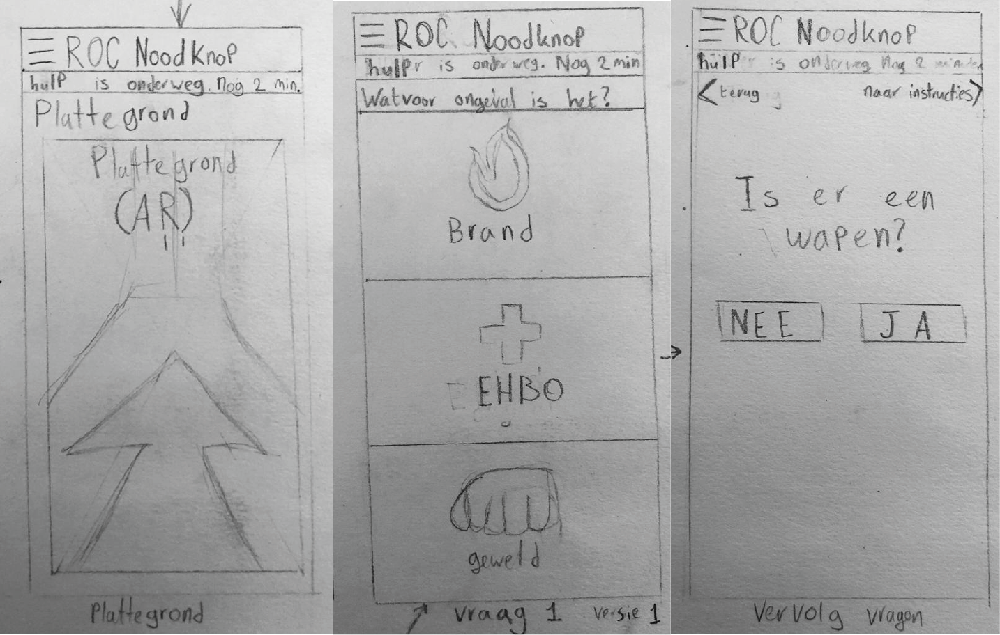
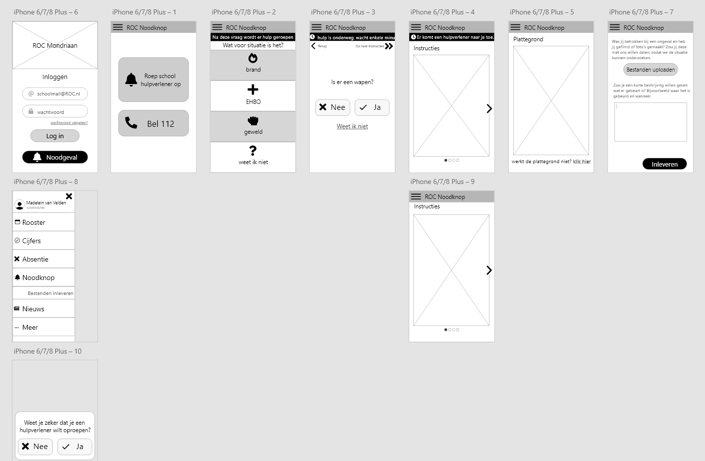
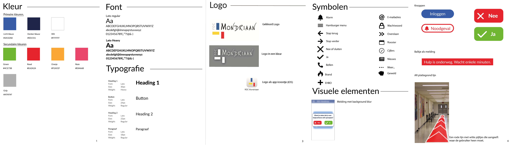

Assignment
At university I got the assignment to make an Emergency Response app for a Dutch school called ‘ROC Mondriaan’. This app makes it possible for students, teachers and fellow workers to get help. I did this project in a group and the idea is made in collaboration. I’ve been responsible for the Hi-Fi prototypes during this project.
Process
Firstly, there has been done research to the target audience. As group we decided to focus on the students and teachers instead of the Emergency Response Officers. We did this so we could complete this project within 8 weeks.
After this we brainstormed about a concept that would fit with our client and our target audience. The concept can be explained in three steps:
Step 1: The user presses a button to show there is a emergency situation. Through the WiFi signal, the location can be tracked. After this some questions appear in the screen, so the user can explain the situation more in depth.
Step 2: After this question, more follow up questions will appear. The questions will be different based on the answers, so the situation can be analyzed even more.
Step 3:
Eventually the app will give instructions on what the user has to do. This could be about health or an evacuation. By an evacuation the app will show an arrow in AR so the user immediately knows where to go to leave the building immediately.
A separate part of our concept is it can make videos/pictures during an emergency situation for evidence. The Emergency Response Officer can analyse this information later.
When the concept was finalized, I started sketching.

After getting feedback from my peers, I worked out some wireframes in Adobe XD.

I also made a styleguide for this app.

There has been a lot of research prior to designing this project. We made this to have a good end result for our target audience. We used clear and calm color, which is very important during an emergency. We used a lot of icons. Our target audience doesn’t always master Dutch or has trouble with spelling, so icons will make it more clear for everyone.
The end product below has been made in Dutch, because it was for a Dutch school.